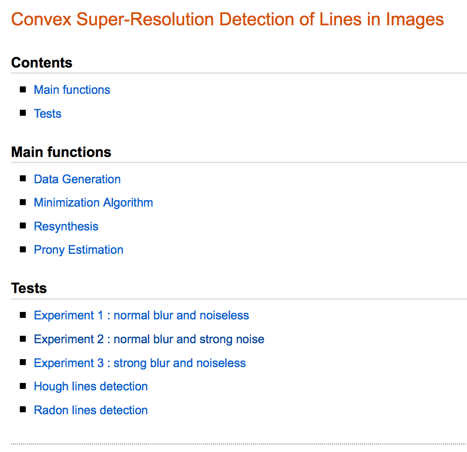
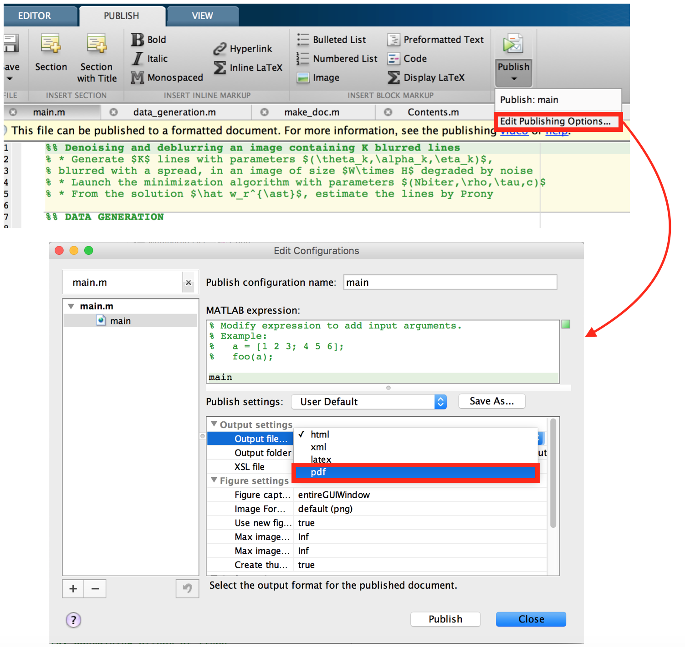

Cet article va vous expliquer comment créer une jolie doc pour vos programmes Matlab 🙂
A titre d’exemple, voici le lien vers la documentation de la Toolbox de mon dernier papier de recherche (voir rubrique Publications pour télécharger l’archive des sources) :
Mon exemple de documentation html
dont je vous extrais une partie en screenshot :
{kind=link}
Si c’est le genre de doc que vous voulez réalisez, vous êtes à la bonne adresse ! 😉
Structurer son code Matlab en bonne et due forme
La première chose à faire, pour être en mesure de générer une page html comportant le code ainsi que les figures obtenues par celui-ci, est de le structurer de manière à ce que la commande publish puisse identifier les différentes zones : titre, parties, code, etc.
Ci-dessous la visualisation de ma fenêtre d’édition, montrant la structuration du code correspondant au screenshot précédent :

- Titre : décrit en une ligne (appelée ligne H1) la fonction principale de votre fichier, et doit se situer tout en haut, pour apparaître en orange dans le titre du html, précédé obligatoirement de deux pourcents
%%:
%% Denoising and deblurring an image containing K blurred linesNote : c’est cette ligne de code qui apparaîtra également dans le fichier Contents.m.
- Description : accolées juste en dessous du titre, ces quelques lignes permettent de préciser un peu plus en détail le rôle joué par votre script/fonction, son fonctionnement, ses entrées/sorties, etc. Elles sont précédées d’un seul
%:
%% Denoising and deblurring an image containing K blurred lines
% \* Generate $K$ lines with parameters $(\\theta\_k,\\alpha\_k,\\eta\_k)$,
% blurred with a spread, in an image of size $W\\times H$ degraded by noise
% \* Launch the minimization algorithm with parameters $(Nbiter,\\rho,\\tau,c)$
% \* From the solution $\\hat w\_r^{\\ast}$, estimate the lines by PronyNote : les * suivi d’un espace dans un commentaire sont interprétés comme des puces, tandis que *texte* (sans espace) affichera le texte en gras. Pour plus de détails sur la mise en forme du texte voir ici.
- Titre des sous parties : permet de diviser le fichier en plusieurs parties et de créer une table des matières ‘Contents’ comme vous pouvez le voir sur le premier screenshot. Ces noms de parties sont repérées par deux pourcents
%%:
%% DATA GENERATION- Texte explicatif : vous permet d’insérer des explications afin d’articuler et d’éclaircir les encadrés comportant du code, et peut éventuellement comporter des formules \(\\LaTeX\), il se présente sous la forme suivante :
%%% Add current folder and subfolders to the pathNote : il est également possible d’insérer à cet endroit des liens, des images, etc.
- Code : vous permet d’insérer du code dans un encadré, avec les commentaires associés, les lignes ne sont précédés d’aucun symbole
%:
tmp=which('main'); % complete path to the main file index=strfind(tmp,'/'); % index of '/' into the string tmp p=tmp(1:index(end)); % folder which contains the file
addpath(genpath(p)); % add folder and its subfolders to the path
clear tmp p index % clear these temporary variablesGénérer la doc html de chaque fichier .m via la commande publish
Une fois votre code correctement structuré, vous pouvez générer la page html correspondante de l’une des deux façons suivantes :
Cliquez sur l’onglet PUBLISH en haut de la fenêtre d’édition, puis le bouton Publish pour générer la doc html. Un dossier html sera créé dans le répertoire contenant votre fichier filename.m, contenant une page filename.html et des images utilisées dans celle-ci.
{kind=link}
Autre méthode : tapez la commande suivante dans la fenêtre de commande Matlab
publish('filename.m')Vous pouvez également spécifier un certain nombre d’options tels que le format de la publication (par défaut html, mais possible en \(\\LaTeX\), en .doc ou encore .ppt), son emplacement, etc. Pour plus d’information consulter la doc de publish.
publish('index.m',struct('format','html','outputDir','doc'));Pour résumer cette partie vous pouvez également vous référer à cette aide Matlab.
Créer un index pour organiser les pages html entre elles
Une fois générées toutes les pages html au sein d’un même répertoire, il peut être utile de les “regrouper” au sein d’une même page, disons index.html, contenant des liens pointant vers ces pages.
Pour cela, on créé de même un fichier index.m, qui présente la même structure de code décrite précédemment, et que l’on va également convertir en index.html via la commande publish :
%% Convex Super-Resolution Detection of Lines in Images
%% Main functions
%%
% * <data_generation.html Data Generation>
% * <minimization_Chambolle.html Minimization Algorithm>
% * <resynthesis.html Resynthesis>
% * <prony.html Prony Estimation>
%% Tests
%%
% * <noiseless.html Experiment 1 : normal blur and noiseless>
% * <strong_noise.html Experiment 2 : normal blur and strong noise>
% * <strong_blur.html Experiment 3 : strong blur and noiseless>
% * <hough_lines_detection.html Hough lines detection>
% * <radon_lines_detection.html Radon lines detection>Ici la mise en forme pour un lien dont le nom est “texte” pointant vers le fichier filename.html est la suivante :
<filename.html texte>
Le résultat est le suivant :
Pour afficher la page html à partir de la fenêtre de commande Matlab, tapez :
web('chemin_vers_repertoire/index.html','-helpbrowser')L’option '-helpbrower' permet d’ouvrir l’index et de naviguer entre les pages dans le “Help Browser” de Matlab, ce qui est plus commode. Si on ne spécifie pas cette option c’est votre navigateur web qui s’en chargera.
Produire une Toolbox accessible dans le Help Browser de Matlab
Maintenant que notre documentation html est complètement générée, on peut vouloir en faire une Toolbox référencée dans Matlab. Cette procédure s’appuie sur deux fichiers que nous allons créer :
info.xml: qui permet de trouver et d’identifier vos pages de documentation.helptoc.xml: qui permet de créer une table des matières de la documentation et permet de l’afficher dans “Contents pane” (à gauche) de votre “Help Browser”.
Le fichier info.xml doit se situer dans le même répertoire que vos pages html de documentation, et ressembler à ceci :
<productinfo xmlns:xsi="http://www.w3.org/2001/XMLSchema-instance"
xsi:noNamespaceSchemaLocation="optional">
<?xml-stylesheet type="text/xsl"href="optional"?>
<matlabrelease>2013a</matlabrelease>
<name>Convex Super-Resolution Detection of Lines in Images</name>
<type>toolbox</type>
<icon></icon>
<help_location>../doc</help_location>
</productinfo>Changer le nom de la Toolbox par le vôtre dans la balise
Exemple : dans mon cas, je l’ai mentionné en relatif, en effet mon fichier info.xml étant situé dans le répertoire doc/, le chemin vers doc, relativement à info.xml, est bien ../doc.
En fait, quand le répertoire doc/ contenant vos pages html et info.xml va être ajouté au path de Matlab, il va identifier le fichier info.xml, et renseigner la position de votre Toolbox en consultant la balise <help_location>.
Note : pour ajouter un répertoire au path faites un clic droit sur celui-ci et choisissez Add to Path, ou bien en ligne de commande addpath('chemin\_vers\_repertoire'). Pour ajouter tous les dossiers et sous dossiers de votre répertoire de travail au path, voir le code de l’encadré bleu de l’image plus haut, qui utilise les commandes which et genpath.
Attention : si vous modifiez le fichier info.xml ou helptoc.xml, il vous faudra retirer du path le répertoire les contenant, puis la rajouter au path pour prendre en compte les modifications.
{kind=link}
Le fichier helptoc.xml doit également se situer dans le même répertoire que les pages html de documentation. Il permet de créer une table des matières de votre documentation (comme son nom l’indique toc = table of contents). Il se présente sous cette forme :
<?xml version='1.0' encoding="utf-8"?>
<toc version="2.0">
<tocitem target="index.html">Convex Super-Resolution Detection of Lines in Images
<tocitem target="main.html">Main functions
<tocitem target="data_generation.html">Data Generation</tocitem>
<tocitem target="minimization_Chambolle.html">Minimization Algorithm</tocitem>
<tocitem target="resynthesis.html">Resynthesis</tocitem>
<tocitem target="prony.html">Prony Estimation</tocitem>
</tocitem>
<tocitem target="main.html">Tests
<tocitem target="noiseless.html">Experiment 1 : normal blur and noiseless</tocitem>
<tocitem target="strong_noise.html">Experiment 2 : normal blur and strong noise</tocitem>
<tocitem target="strong_blur.html">Experiment 3 : strong blur and noiseless</tocitem>
<tocitem target="hough_lines_detection.html">Hough lines detection</tocitem>
<tocitem target="radon_lines_detection.html">Radon lines detection</tocitem>
</tocitem>
</tocitem>
</toc>Après avoir retirer/ajouter du path le répertoire de votre documentation, vous pouvez visualiser le résultat comme suit :
- Cliquer sur
Help>Documentationdans la barre d’outil - Puis tout en bas de la fenêtre qui s’ouvre, cliquez sur
Supplemental Software(qui contient vos Toolbox). - Cela ouvre conjointement le
Help Browsersur le fichierindex.html(dans mon cas, voir les tocitem ci-dessus qui le spécifie) ainsi qu’une table des matières à gauche qui vous permet de naviguer au sein de la documentation de votre Toolbox ainsi hiérarchisée.
En images :
{kind=link}
{kind=link}
{kind=link}
Ou plus rapide à partir de la fenêtre de commande, tapez simplement :
doc -classicEnfin vous pouvez créer une entrée dans la base de donnée de Matlab pour effectuer une recherche de vos pages de documentation inhérentes à votre Toolbox en tapant :
builddocsearchdb('chemin_vers_repertoire')La procédure est récapitulée dans cette aide Matlab.
Annexe 1 : générer un fichier Contents.m listant tous les help descriptions
En dernière analyse, il me semble intéressant de disposer d’une liste de tous les fichiers .m avec leur description associée, et de pouvoir s’y référer rapidement via la commande help.
C’est le rôle du fichier Contents.m qui se génère en cliquant sur :
Current Folder>Reports>Contents Report
{kind=link}
Cela créé le fichier Contents.m contenant la liste des fichiers .m ainsi que leur description. Si vous avez respecté la structure du code suggéré, la description succinte correspond à la première ligne H1 du fichier. Le répertoire qui contient mes fichiers .m se nomme “main functions” comme vous pouvez le voir dans la barre d’adresse. Ainsi en tapant :
help 'main functions'On visualise la description de toutes les fonctions du répertoire :
{kind=link}
Améliorons encore un peu les choses. Imaginons que nos fichiers .m sont répartis dans plusieurs répertoires. On peut bien évidemment répéter la même opération dans chaque répertoire, mais cela peut rapidement s’avérer pénible si la Toolbox contient un grand nombre de répertoires. Par conséquent, on aimerait pouvoir effectuer récursivement cette tâche. C’est ce que propose la fonction update_contents (qui requiert la fonction get_contents). Ainsi en tapant :
update_contents('chemin_repertoire_principal')Cela créé un unique fichier Contents.m à la racine qui a cette tête :
% MATLAB CODE
%
% Contents file for MATLAB CODE and its subfolders.
%
% MATLAB CODE
% main - Denoising and deblurring an image containing K blurred lines
% make_doc - Generate a html documentation in folder doc/
%
% MATLAB CODE/MAIN FUNCTIONS
% data_generation - Generate K lines in a degraded image
% minimization_Chambolle - Minimization algorithm - relaxed Chambolle-Pock version
% minimization_Condat - Minimization algorithm - based on Condat's framework
% prony - Recovering parameters of lines by the Prony method
% resynthesis - The denoised image xstar
%
% MATLAB CODE/TESTS
% hough_lines_detection - Hough transform applied to lines detection
% noiseless - Deblurred and estimate parameters of K blurred lines with high accuracy
% radon_lines_detection - Radon transform applied to lines detection
% strong_blur - Deblurred an image containing K strong blurred lines
% strong_noise - Denoising an image containing K blurred lines
%
% MATLAB CODE/AUXILIARY FUNCTIONS
% adjconv - Check the expression of the adjoint of a convolution
% convmat - Check the equivalence between matrix product and operator convolution
% Dirichlet_Kernel - Dirichlet Kernel expression
% dot2 - Canonical inner product on complex vectors
% dotF - Frobenius inner product
% dotH - Inner product defined on space H=WxQ
% dotQ - Inner product defined on space Q
% dotQC - Inner production defined on space QC
% dotW - Inner product defined on space W
% dotWC - Inner product defined on space WC
% dotWL - Inner product defined on space WL
% FastPeakFind - Analyze noisy 2D images and find peaks using local maxima
% fixPSlinestyle - Fix line styles in exported post script files
% get_contents - Get the contents of a specified directory
% gradient - Of the operator A
% normW - Norm defined on space W
% opA - Operator A
% opadjA - Adjoint of the operator A
% opadjL1 - Adjoint of the operator L1
% opadjL2 - Adjoint of the operator L2
% opadjL3 - Adjoint of the operator L3
% opadjL4 - Adjoint of the operator L4
% opL1 - Operator L1=L3+L4
% opL2 - Operator L2
% opL3 - Operator L3
% opL4 - Operator L4
% proxsigmahconj - Proximal operator of H*
% proxsigmahNconj - Proximal operator of H_N*
% proxtaug - Proximal operator of G
% proxtaugfour - Proximal operator of G by FFT
% proxtaugmat - Proximal operator of G involving a big Kronecker product
% proxtaugmat2 - Proximal operator of g involving M+1 smaller matrix products
% test_adjoints - Test adjoints
% test_parametres_algo1 - Test which is the best parameters (tau,sigma) to perform minimization 1
% test_parametres_algo2 - Test which is the best parameters (tau,sigma) to perform minimization 2
% tightfig - Remove excess space around the figure
% update_contents - Create a Contents.m file including subdirectories
%
% This file was generated by update_contents.m .
%
% 02-Mar-2016 17:46:52 .Annexe 2 : générer la documentation dans un fichier .pdf ou .tex
Commençons par l’export au format .pdf
Pour cela cliquez sur Publish>Edit Publishing Options puis choisissez Output file>pdf
 ou bien en ligne de commande :
publish('filename.m',struct('format','pdf'));Si vous êtes aussi pointilleux que moi, vous estimerez peut-être que les formules \(\\LaTeX\) ainsi générées sont trop petites et floutées. Si tel est le cas alors voici la procédure à suivre pour y remédier :
- Nous allons modifier la commande publish, pour cela commençons par déterminer son emplacement via la commande which.
which('publish')- Rendez-vous dans le répertoire la contenant (pour ma part codetools), ouvrez la avec votre éditeur préféré (éventuellement en mode root pour avoir la permission de modifier le fichier). Allez à la ligne 780 (pour les utilisateurs de Matlab R2013a), et modifier la valeur de
FontSize, par exemple prenez 30 au lieu de 22 :
temptext = text('Parent',tempaxes,'Position',[.5 .5], ...
'HorizontalAlignment','center','FontSize',22, ...
'Interpreter','latex');- Allez ensuite à la ligne 717, et remplacer la ligne suivante :
swapTexForImg(dom,equationNode,outputDir,fullFilename,equationText,newSize(2),newSize(1))par :
swapTexForImg(dom,equationNode,outputDir,fullFilename,equationText,newSize(2)/scale,newSize(1)/scale)avec scale un facteur de votre choix, par exemple 2.
- Enregistrer les modifications, et tapez successivement dans la fenêtre des commandes :
rehash toolboxcacheclear functions- Relancer la commande publish, le tour est joué !
Les formules apparaissent plus grandes, moins floutées et donc plus lisibles.
Néanmoins elles ne sont toujours pas parfaites, pour la simple et bonne raison qu’elles sont converties en image bitmap (png par défaut) avant d’être insérées dans le pdf. Une autre façon de procéder est de générer un fichier .tex pour la doc puis de la compiler pour obtenir dans le .pdf produit des formules vectorielles.
Comment générer un fichier .tex de documentation via la commande publish ?
Pour cela tapez la commande :
puis compiler le
.texgénéré avec votre éditeur \(\\LaTeX\) favori.Le résultat pour les formules est maintenant impeccable!
Malheureusement c’est maintenant au tour du code de ne plus être formaté aussi bien qu’en html ou en pdf, puisqu’il est converti de manière brute dans un environnement verbatim. Pour y remédier, vous pouvez :
.texen utilisant par exemple lstlistingpublishDans ce dernier cas, il vous faut inventer à votre sauce un fichier
matlab2latex\_pretty.xslqui spécifie le style que vous désirez donner au code, et taper :Voilà le tuto est terminé, j’espère qu’il vous aura été utile 🙂